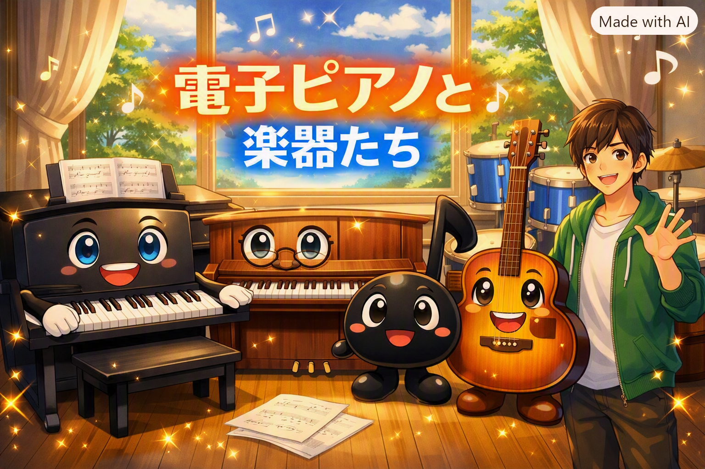

電子ピアノと本物のピアノ
あらたんとよしんが出会い、絶対音感や「アルティメットチューニングマジック」を通して友達になる最初の物語。
あらたん・よしん・くろさん・ギタさん・はてなさんの物語

島町楽器に住む電子ピアノ「あらたん」、アップライトピアノ「よしん」、
おんぷトーンの「くろさん」、アコースティックギターの「ギタさん」、
そして彼らを作った社長「はてなさん」。
楽器たちが喋り、バンドを組み、投資をし、作者に会いに行く——そんな不思議であたたかい世界の小説サイトです。
あらたんとよしんが出会い、絶対音感や「アルティメットチューニングマジック」を通して友達になる最初の物語。
かわいいおんぷトーン「くろさん」との出会い。きらきら星のセッションから、生き物楽器ズ結成へつながるエピソード。
「ものじゃなくて、ちゃんと優しく扱ってほしい」——楽器たちの本音を歌う、生き物楽器ズのデビュー曲の誕生。
桜の下でのお弁当、おしゃれなカフェでのシロノワール。楽器たちの日常と、少し不思議な世界のルールが見えてくる話。
喋る楽器を作る会社「ヤマヒ」の社長・はてなさんの過去と、技術員との関係。楽器たちの「親」の物語。
販売されてバラバラになった仲間たちが、ワープ能力と人間たちの協力で再び一緒に暮らせるようになるまで。
楽器たちが自分たちの世界の「作者」に会いに行くメタな回。小学5年生の作者・あらたとの対話が描かれます。
生き物楽器ズが投資に挑戦し、「金の成る木」のたとえでお金のことを学んでいく、ちょっと現実的なエピソード。